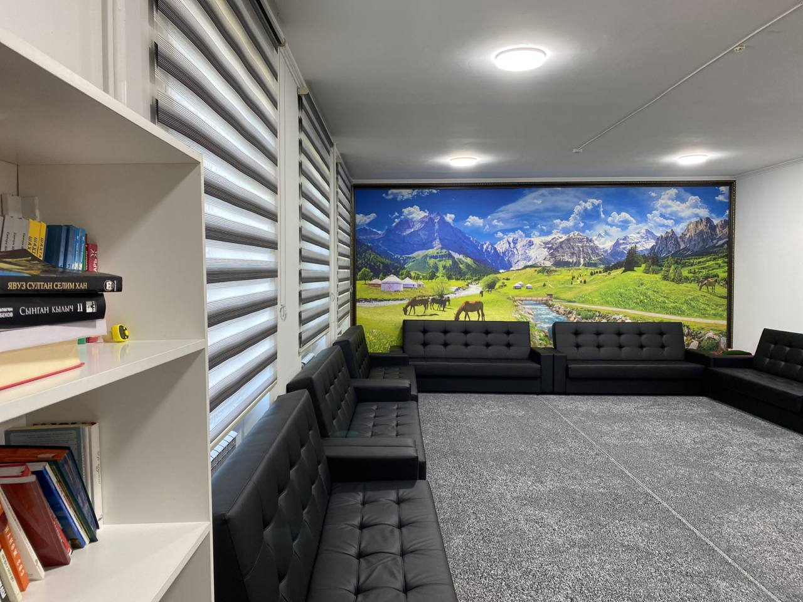
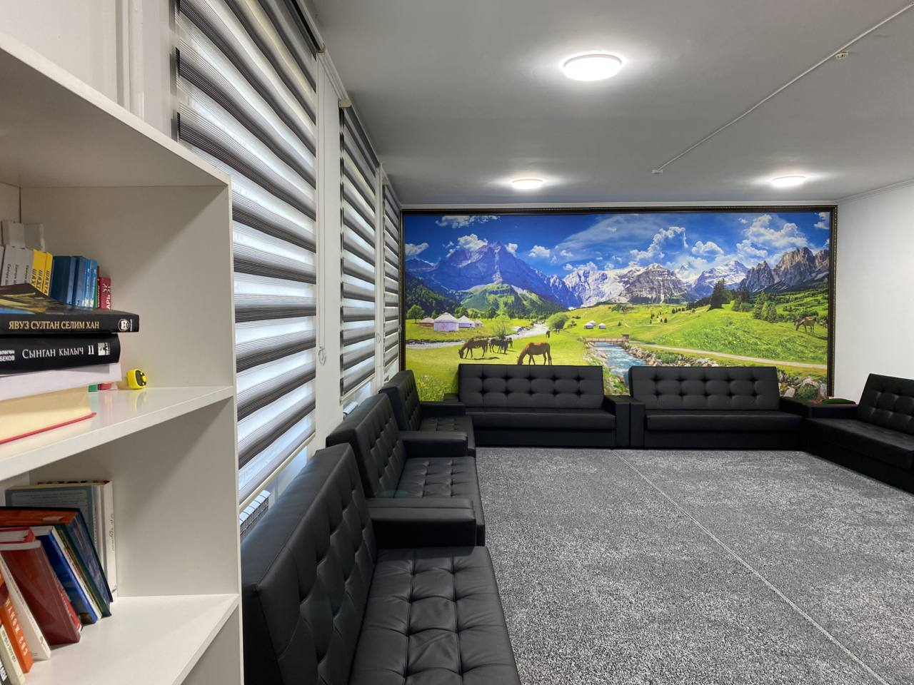

Краткая история создания и развития Республиканского спортивного колледжа им. Шералы Сыдыкова РСК:
 

РСК является республиканской образовательной организацией среднего профессионального образования.
В 1971 году в г. Фрунзе организована Республиканская общеобразовательная школа спортивного профиля им. Н.К.Крупской, а в 1989 году приказом Государственного комитета СССР по физической культуре и спорту была преобразована во Фрунзенское училище олимпийского резерва с организацией 1 и 3 курсов, в 2001 году переименовано в Республиканское училище олимпийского резерва им.Ш.Сыдыкова.В 2019 году переименовано в Республиканский спортивный колледж им Ш.Сыдыкова.


РСК является единственным в республике учебным заведением, в котором готовятся резервы в национальные сборные команды Кыргызской Республики среди юношей, юниоров и взрослых по 8 видам спорта: вольной, женской, греко-римской борьбе, дзюдо, женское дзюдо, тяжелой атлетике,боксу, легкой атлетике. Отбор в РСК производиться в августе месяце, после окончания 7-го класса и 11 класса на 1-курсы.
В колледже учатся, проживают и занимаются 395 одаренных юношей и девушек со всех регионов республики.
РСК располагает учебным корпусом, общежитием, спортивным комплексом, медсанчастью, сауной, столовой с четырехразовым питанием.
ФИО руководителя образовательной организации и контактные данные:
Ташматов Айбек Айтбекович

Рабочий телефон: 0312-334187
Электронная почта: ruor33@mail.ru
ФИО заместителя директора по учебной части и контактные данные:
Кайырбек к Нургул
Рабочий телефон: 0312-334676
Электронная почта: ruor.kolbaeva33@mail.ru
ФИО заместителя директора по воспитательской части и контактные данные:
Кожомат уулу Тилек
Рабочий телефон: 0312-334187
ФИО заместителя директора по спортивной части и контактные данные:
Ибраимов Данияр Анарбекович
Рабочий телефон: 0312-334038
Мобильный телефон: 0508 770 333
Электронная почта: ruor33@mail.ru